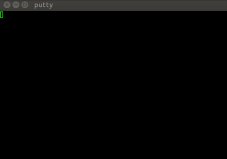

Console Access to Nortel Baystack 5510-48T
For my homelab setup I purchased a Baystack 5510-48T, this filled my need for a manageable (semi)Layer 3 switch and at a great price. I really wanted some cisco gear but it was just way out of budget for the home.
I snagged the switch off ebay for ~$50 which is amazing for 48 gig ports. After racking, I needed to console into the device to set an IP and make sure telnet was working. This turned to be a little more difficult than I expected.
First I used a null modem cable, which after doing a little research found out will not work. Reading online some posts state that it requires an official Nortel console cable, well I did not belive that (or want to) as the official cable cost more than the switch on ebay. So I did more reading and found it seems to only need a straight through serial cable like this one from amazon. Combining that cable with my usb to serial adapter like this one.
I used ubuntu to get into the switch but if you are using mac or windows you may need to get drivers for the tu-s9 from here. Then download putty.
So first I opened putty and set the serial device as /dev/ttyUSB0 (again if you are on windows or mac this will be different).
Make sure the settings under serial are set as this as well.
I banged my head against the wall for awhile at this, putty still was blank! I had the settings right and the right cable so what was going on. I tried sending breaks as well as CTRL+Y (remembering this is necessary to see the Nortel Menu) did not work, in addition to just banging on the keyboard. 
The trick was CTRL+W, I found that bit of info at the bottom of this reddit thread and seemingly nothing else I skimmed through mentioned it.
As soon as I hit CTRL+W I was greeted with the Nortel logo like below:
Then, I hit CTRL+Y and got the menu I was expecting.
From there I went to IP Configuration/Setup and filled in my settings, don’t forget to do the IP Address to Ping: otherwise it will not fill in the IP under the In Use column.
Now I just have to find and install some more up to date firmware, that will be another post.